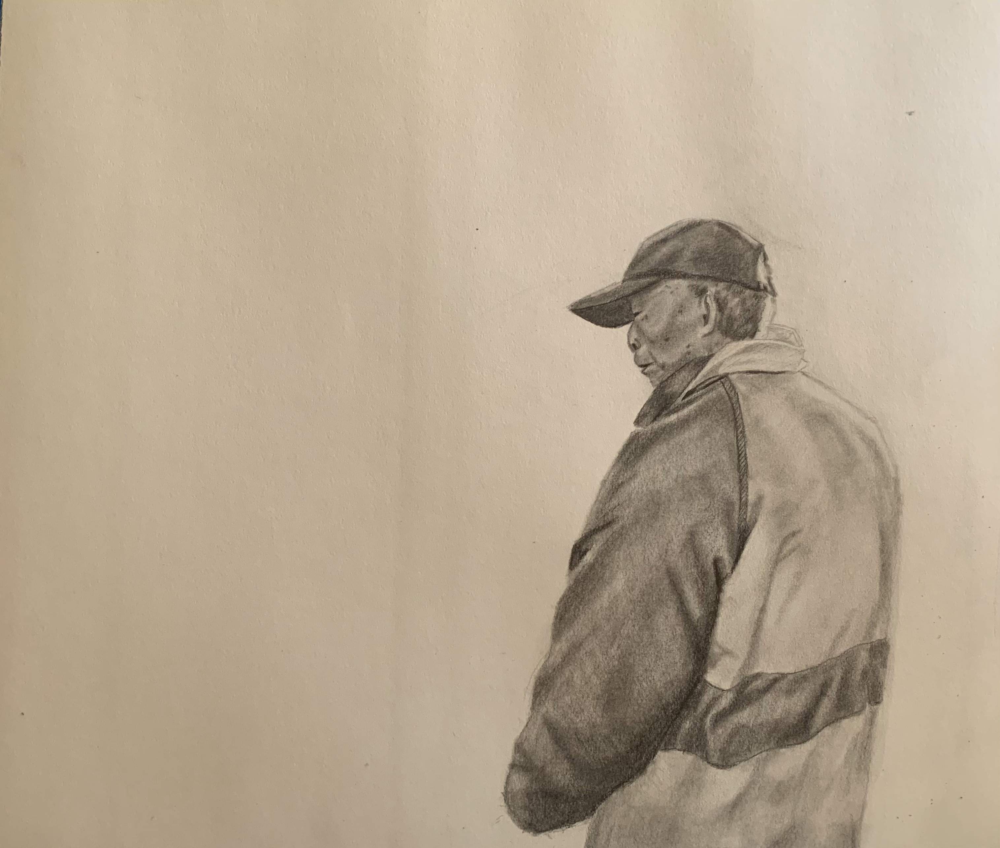
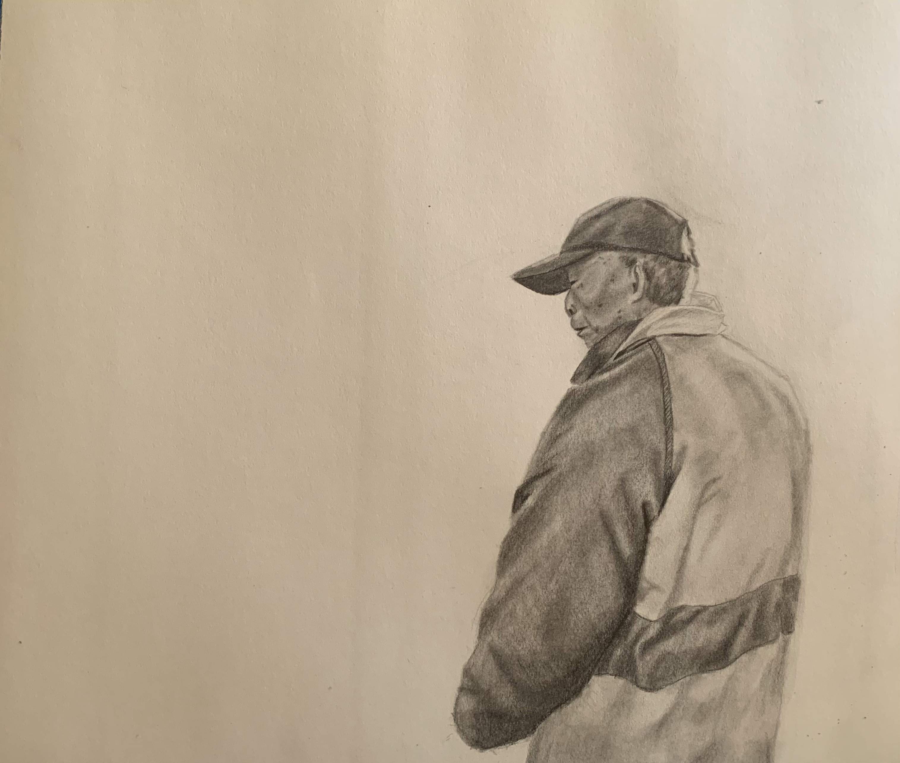

Our class was assigned to think of a solution to a pet peeve.
My pet peeve: Not being able to wake-up to natural sunlight.
Solution: Create automatic roller blinds that is controlled using an LDR. I was able to implement the blinds to be light-sensitive.
Additionally, I added a button With manual closing/opeing preferences.
 
